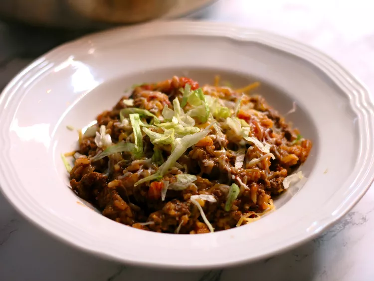

Taco skillet

Description
Easy taco skillet bake that uses only one pan. This recipe can be made for under $10!
Ingredients
- Ground beef
- Onion
- Tomatoes
- Water
- Mexican cheese
- Lettuce
- Seasonings
Steps
- Heat a large skillet over medium heat; cook and stir beef and onion until beef is browned
- Stir tomatoes, water, rice, and taco seasoning into beef mixture and bring to a boil.
- Top with Mexican cheese blend and lettuce before serving.